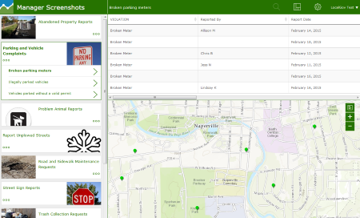
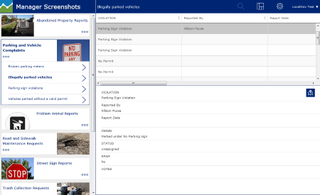
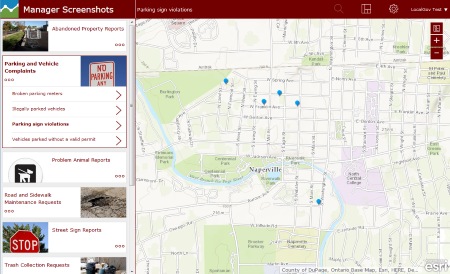

|  |
Crowdsource Manager, a companion group template to Crowdsource Reporter, is a responsive group application template (desktop and tablet devices) that allows users within an organization to review problems/observations submitted through the Manager app. |
|
The app presents one or more maps for users to review a problem or observation. Users can look for patterns and clusters, review problem details, update status, and assign responsibility. |
 |
|  |
The application source code can be downloaded for further configuration. This additional configuration of the application can be applied back to an ArcGIS Online configurable web application item or hosted on your own web server. |